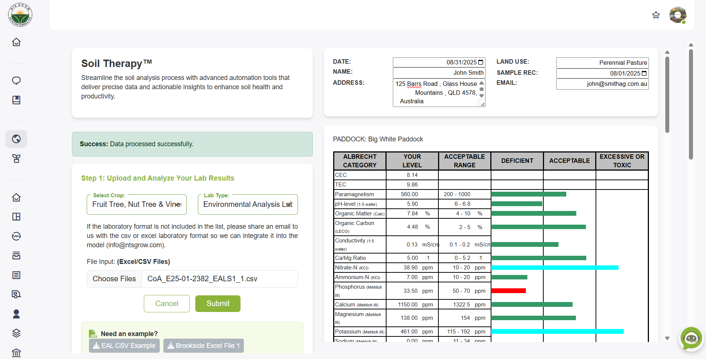
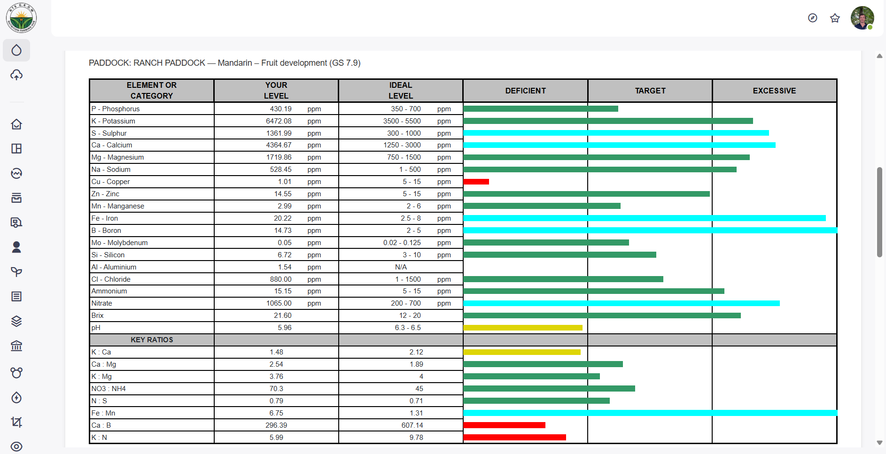
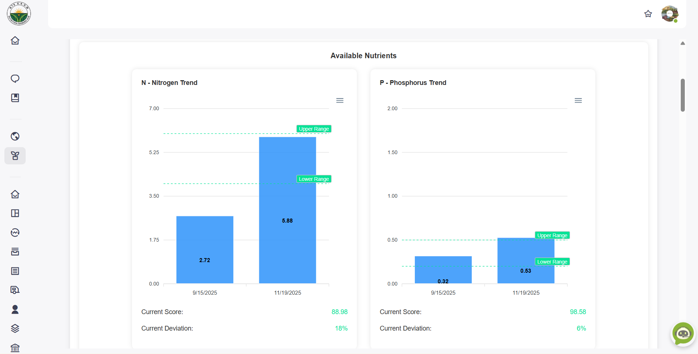
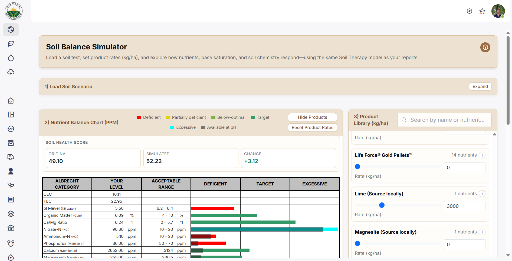
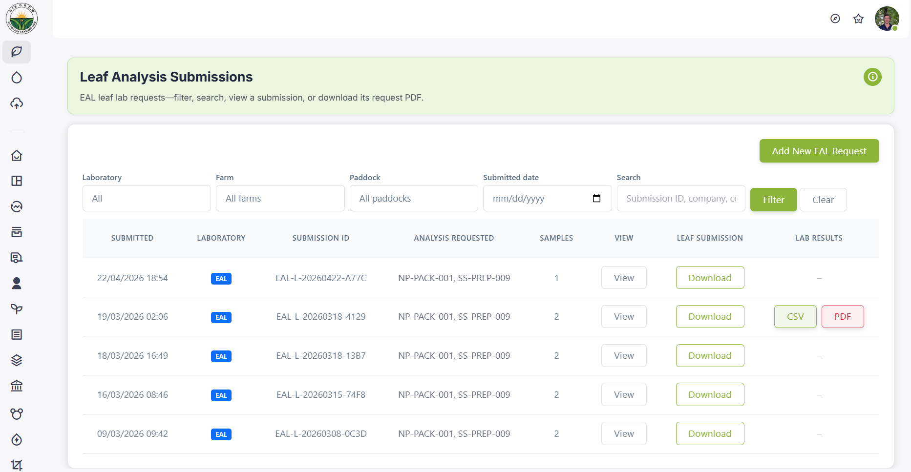

Upload soil, plant tissue, and SAP laboratory results—or request new tests through partner lab paths—and receive nutrient overviews, product recommendations, and therapy analytics for resilient, profitable farms.


LAB ANALYSIS UPLOAD
Upload your input files and receive immediate nutrient status overviews. Our advanced system supports Soil Nutrition, Plant Nutrition, and SAP Nutrition streams to identify deficiencies, imbalances, and optimization opportunities. On the soil side, you can convert reports and use advanced tools such as the Soil Balance Simulator, matching the in-app Resilience workflow.

NUTRIENT MANAGEMENT
Get intelligent product recommendations based on your analysis results, with specific application rates and timing. Access therapy analytics, track your nutrient history over time, and monitor soil, plant tissue, and SAP health to optimize Plant Nutrition and SAP Nutrition programs alongside Soil Nutrition.

SOIL BALANCE SIMULATOR
Explore different nutrient scenarios and see how adjustments could shift soil balance across key parameters. Use the Soil Balance Simulator to compare options, support planning discussions, and align recommendations with your longer-term soil health strategy—without replacing professional agronomy advice or on-farm validation.

REQUEST LAB ANALYSIS
Submit structured requests directly from G.R.O.W when you need fresh lab work: soil, leaf, and SAP flows connect to partner laboratories available in your region. Each flow captures farm and paddock context, attachments, and shipping or sampling details so your submission stays complete. You can also monitor active requests and revisit past orders alongside the analyses you already upload into your Resilience workspace.
Access advanced tools across Soil Nutrition, Plant Nutrition, and SAP Nutrition—therapy intelligence and nutrition analytics that stay in Resilience, separate from Organisation farm dashboards.
Upload soil, plant tissue, and SAP reports, or request new tests through partner lab paths where available. Includes report conversion and advanced soil tools such as the Soil Balance Simulator where your plan supports them.
Explore nutrient scenarios and see how adjustments could shift soil balance across key parameters—compare options and support planning without replacing professional agronomy or on-farm validation.
Submit structured requests for soil, leaf, and SAP analysis through partner laboratories available in your region, with farm, paddock, attachments, and shipping details—then track active requests alongside uploads in Resilience.
Get comprehensive nutrient status overviews with visual charts and detailed breakdowns. Identify deficiencies, excesses, and nutrient imbalances at a glance.
Receive intelligent product recommendations tailored to your analysis results, with specific application rates, timing, and methods for optimal results.
Monitor soil, plant tissue, and SAP health over time with comprehensive tracking tools. Track changes, trends, and improvements in your farming system’s resilience.
Track therapy submissions and lab requests over time in one place—compare runs, spot trends, and keep Resilience history distinct from Organisation operational reporting.
Surface patterns in soil, plant tissue, and SAP therapy data—nutrition intelligence for Resilience, not the Organisation operations dashboard.